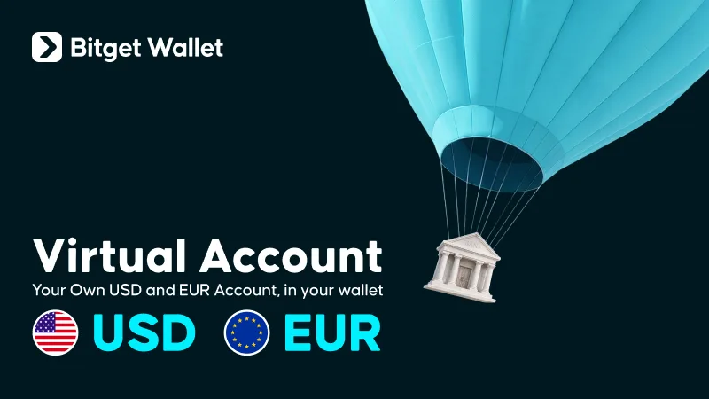
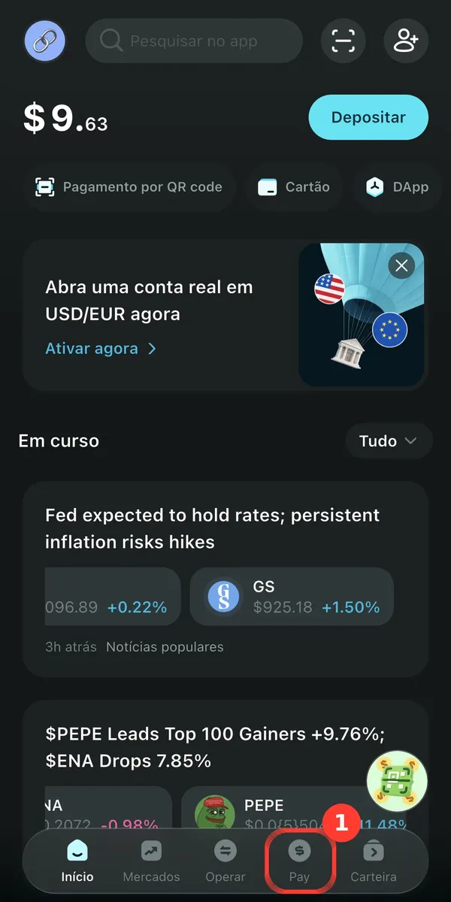
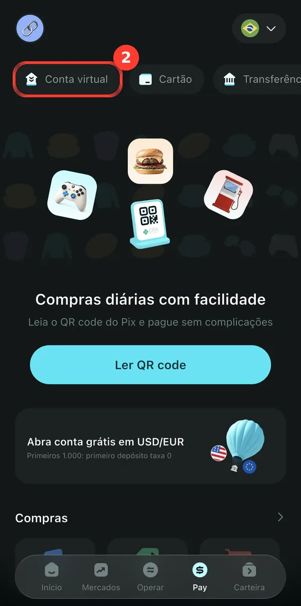
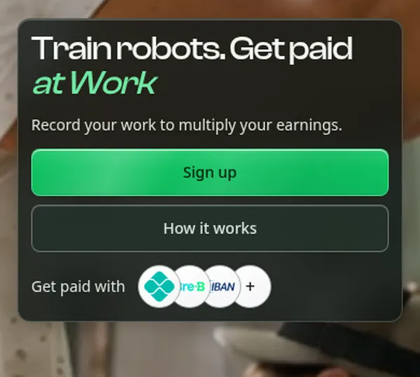
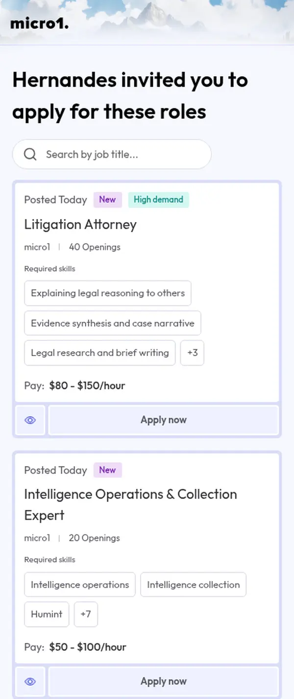
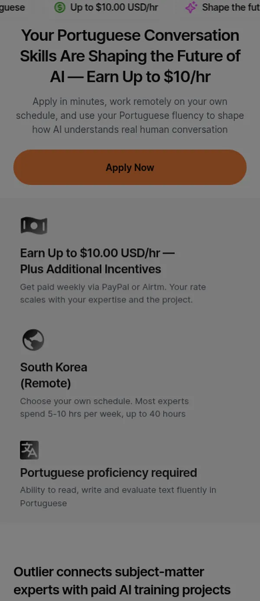
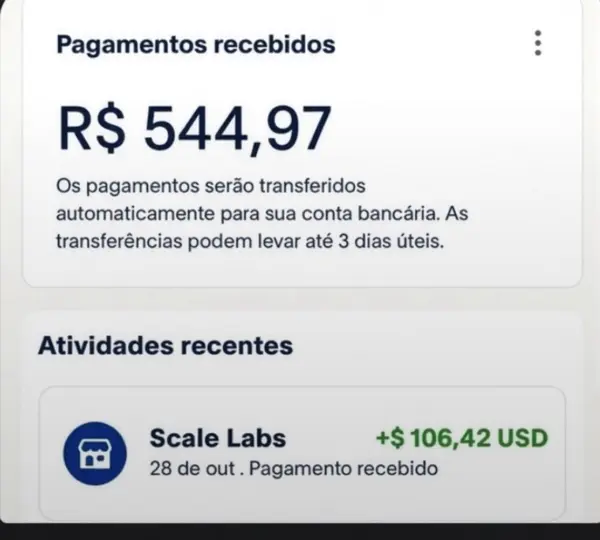

Ganhar dinheiro em dólar
1º abra sua conta internacional em dólar na Bitget Wallet; 2º escolha uma plataforma e comece a ganhar — e receba nessa conta.
- 1Conta internacionalBitget Wallet
- 2Escolha onde ganharHub, micro1 ou Outlier
- 3Receba em dólarSaque e organize seu dinheiro
Comece aqui: abra sua conta internacional em dólar
✅ Conta em dólar grátis, aberta pelo celular. É nela que você recebe os ganhos das plataformas abaixo.
💳 Abrir minha conta na Bitget WalletPublicidade · Parceria paga · Código de convite: HERNANDES
Passo 1 · Abra sua conta internacional
Publicidade · Parceria paga com a Bitget Wallet.
Com a Virtual Account da Bitget Wallet você tem números de conta próprios em dólar (USD) e euro (EUR) dentro da sua carteira. O que você recebe é convertido automaticamente em USDC ou USDT.
✅ Conta em dólar grátis, aberta pelo celular. É nela que você recebe os ganhos das plataformas abaixo.
💳 Abrir minha conta na Bitget WalletCódigo de convite: HERNANDES

Veja como funciona
O que é e quanto custa
- Abertura gratuita, sem precisar morar nos EUA ou na Europa e sem ir a agência. Disponível para usuários no Brasil.
- Recebe por ACH, Fedwire, SWIFT (dólar) e SEPA (euro). Envios devem ser liberados nos próximos meses.
- Útil para receber salário ou pagamentos do exterior e remessas internacionais.
- O saldo pode ser usado no cartão Bitget Wallet, Pix, pagamentos por QR Code e transferências.
- Cada depósito tem taxa (valor fixo + 0,3%, conforme o método) e taxa de rede; veja os valores no app. Depósito mínimo: US$ 50 / 1 €. Seu banco pode cobrar taxas à parte, além de tributos como o IOF.
- Exige verificação de identidade (KYC) e envio de documentos.
Passo a passo para abrir
- Toque em Abrir minha conta na Bitget Wallet acima e baixe o app oficial.
- Crie uma carteira nova pelo meu link de convite: web3.bitget.com/share/DcJI?inviteCode=HERNANDES
- Faça o backup da frase de recuperação (seed phrase): escreva no papel e guarde em local seguro.
- No app, toque em Pay, na barra de baixo.

1. Toque em Pay - Na tela do Pay, toque em Conta virtual e depois em Abrir agora.

2. Toque em Conta virtual - Conclua a verificação de identidade e envie os documentos pedidos. A análise costuma levar poucos minutos.
- Escolha a moeda que quer receber (USDC ou USDT) e a rede. Os dados da conta aparecem na hora.
- Para receber, passe os dados exatamente como aparecem no app (nome do beneficiário, banco, número da conta, routing ou SWIFT/IBAN, conforme o método).
Segurança
Nunca compartilhe sua frase de recuperação com ninguém, nem com o suporte. Quem tem a frase tem o seu dinheiro. Não guarde em print ou na nuvem.
Código de convite: HERNANDES
Passo 2 · Escolha onde ganhar em dólar
Ou leia o passo a passo de cada uma abaixo: Hub · micro1 · Outlier
Como funciona e por que pagam
Uma IA aprende com exemplos feitos por pessoas. As empresas de IA precisam de gente para escrever respostas, conferir se estão certas, dar nota a respostas da IA e gravar vídeos de tarefas reais. Isso se chama rotulagem de dados (ou "feedback humano", RLHF).
Plataformas como micro1, Hub e Outlier ligam essas empresas a pessoas comuns e especialistas, e pagam por hora ou por tarefa aprovada, em dólar.
Por que brasileiros podem entrar: o trabalho é 100% online, e as três plataformas aceitam o Brasil. Há até projetos que pedem justamente quem fala português.
Hub: grave tarefas e ganhe em dólar
O Hub (Hub Data Inc., apoiado pela Y Combinator) oferece tarefas pagas de gravação em primeira pessoa para laboratórios de robótica e IA. Aberto para o Brasil, com suporte em português e canal oficial no WhatsApp.
- A partir de US$ 5por hora aprovada*
- Kit grátisem casa
- Saquepor PIX ou USDC
- Brasilliberado
Código de convite: NOGUER
Valores publicados
- Segundo o Hub, a partir de US$ 5 por hora aprovada em casa e US$ 6 em tarefas no local de trabalho; tarefas em destaque podem pagar mais.
- No app, os valores aparecem em reais com câmbio fixo de R$ 5/US$.
- Só vídeo aprovado é pago. A revisão leva de 24 a 72 h, e os recusados mostram o motivo.
- *Valores definidos pelo Hub, sem garantia; dependem das tarefas disponíveis e da aprovação.
Requisitos importantes
- Ter 18 anos ou mais. Uma conta por pessoa.
- Gravar da sua localização real: VPN ou localização falsa dá banimento.
- Pode ser pedida verificação de identidade (Didit).
- O app verifica se o seu celular é compatível no cadastro.
- Boa gravação: visão em primeira pessoa estável, mãos visíveis, boa luz e uma tarefa completa em ritmo natural.
Passo a passo do Hub

Antes de começar, separe: celular compatível (o app confere no cadastro), documento com foto caso peçam a verificação, e chave PIX ou carteira USDC na rede Base.
- Crie a conta. Toque no botão acima e entre com e-mail ou Google. Se pedir código de convite, use NOGUER.
- Forma de saque. Cadastre PIX, conta bancária ou USDC (rede Base).
- Kit grátis. Peça o Starter Kit (faixa de cabeça + suporte de celular). Chega no seu endereço sem frete.
- Escolha a tarefa. Há tarefas em casa e no local de trabalho. Leia as instruções de cada uma antes de gravar.
- Grave. Celular na cabeça, visão em primeira pessoa, mãos aparecendo, boa luz, ritmo natural e a tarefa completa do começo ao fim.
- Envie e aguarde. A revisão leva de 24 a 72 h. Se recusar, o app mostra o motivo para você corrigir.
- Saque. Vídeo aprovado vira saldo. Saque quando quiser, sem taxas (o mínimo aparece no app).
Dicas para ser aprovado: grave da sua localização real (sem VPN), deixe rostos, documentos e telas fora do vídeo e peça permissão antes de gravar no trabalho.
Equipamento
No Hub, o Starter Kit (faixa de cabeça + suporte de celular) é grátis e chega no seu endereço sem custo de frete.
Suporte de cabeça para celularOpcional, caso queira um extra. Alternativa barata: boné + prendedor de celular.
Como receber no Hub
Saque em qualquer dia, sem taxas (o mínimo aparece no app):
- PIX: na hora, em reais.
- Transferência bancária.
- USDC na rede Base, para uma carteira EVM.
Privacidade
No Hub, as gravações são licenciadas para empresas junto com localização GPS e dados demográficos (de forma pseudônima). Deixe rostos, documentos e telas fora do vídeo e peça permissão antes de gravar no local de trabalho.
micro1: especialistas treinando IA
A micro1 recruta especialistas para treinar modelos de IA. A entrevista é feita por uma recrutadora de IA, a Zara, na hora que você quiser.
- Em dólarpagamento em USD
- 2x por mêspela Deel
- Onlineentrevista com IA
- Brasilliberado
- O pagamento pode ser por hora aprovada, por tarefa ou valor fixo, conforme o contrato.
- Precisa de inglês bom: a entrevista é falada.
- Busca quem tem experiência na área (ex.: programação, finanças, saúde, direito).
Passo a passo da micro1

Antes de começar, separe: currículo em inglês (PDF), documento com foto (passaporte ou CNH), computador com câmera e microfone e internet estável.
- Veja as vagas. O botão abre a lista de vagas abertas da micro1, com o valor por hora de cada uma.
- Candidate-se. Escolha uma vaga da sua área e toque em "Apply now". Crie a conta (e-mail ou Google) e envie o currículo. A entrevista usa o seu currículo para montar as perguntas, então deixe claras suas experiências.
- Entrevista com a Zara. É uma conversa falada, em inglês, com uma recrutadora de IA. Você faz na hora que quiser. Ela pergunta sobre a sua área e traz situações práticas para ver como você pensa e explica. Vagas técnicas podem ter teste de código; vagas de anotação, um exercício com dados.
- Resultado. Sai na hora. Se não passar, dá para pedir feedback.
- Contrato na Deel. Se for chamado para um projeto, chega um e-mail para assinar o contrato pela Deel. Ali aparece o tipo de pagamento: por hora, por tarefa ou valor fixo.
- Verificação (KYC). Na Deel, complete 100% do perfil e envie o documento. Sem isso, não há pagamento. Confira se o país escolhido é o Brasil.
- Trabalho e pagamento. Você faz as tarefas do projeto e registra as horas. O pagamento é em dólar, duas vezes por mês (períodos do dia 1 ao 15 e do 16 ao fim do mês).
Dicas para passar: faça a entrevista em lugar silencioso, responda com exemplos reais do seu trabalho e fale com calma.
Atenção na micro1
- Passar na entrevista não garante projeto: depende da demanda da sua área.
- Só é pago o trabalho aprovado.
- Nunca pague para entrar. Cadastre-se só pelo site oficial.
Outlier: treino de IA pago em dólar
A Outlier é a plataforma de treino de IA da Scale AI, empresa que tem a Meta como sócia (a Meta comprou 49% da Scale AI em 2025). Você avalia e melhora respostas de inteligência artificial pelo computador, no seu horário.
- Toda semanapagamento às terças
- PayPalou Airtm
- Portuguêsprojetos em pt-BR
- Brasilliberado
- Projetos de conversa em português pagam até US$ 10/h, segundo a Outlier.
- Quem é fluente em inglês tem mais projetos disponíveis.
- Especialistas (ex.: matemática) ganham mais.
Passo a passo da Outlier

Antes de começar, separe: documento com foto (RG, CNH ou passaporte), conta PayPal ou Airtm e um computador com internet.
- Crie a conta. Toque no botão e cadastre-se com seu e-mail.
- Perfil. Informe idiomas, formação e áreas que você domina. Isso define quais projetos aparecem.
- Identidade. Verifique com documento (RG, CNH ou passaporte). Não use VPN.
- Onboarding e testes. Cada projeto tem um treinamento com regras e testes curtos. São gratuitos. Leia as regras com atenção.
- Pagamento. Cadastre PayPal ou Airtm.
- Dia a dia. Você escreve, confere e avalia respostas de IA, no seu horário. Nos projetos de conversa em português, você conversa com a IA em pt-BR natural.
- Receba. O pagamento é semanal, às terças.

Dicas para ser aprovado: preencha o perfil com sinceridade, faça os testes sem pressa e siga as regras do projeto à risca.
Atenção na Outlier
- O volume de tarefas varia: você pode ficar um tempo sem projeto.
- Contas podem ser restritas pela plataforma.
- Nunca pague para entrar. A Outlier não cobra nada.
- Cuidado com recrutador falso no LinkedIn ou WhatsApp. Cadastre-se só pelo site oficial.
Passo 3 · Receba em dólar
- Hub: saque por PIX, transferência ou USDC na rede Base, que pode ir direto para a sua Bitget Wallet (veja abaixo).
- micro1: paga em dólar pela Deel, duas vezes por mês.
- Outlier: paga toda semana por PayPal ou Airtm.
- Cada plataforma tem seus próprios meios de saque. Confira as opções e taxas no app de cada uma antes de sacar.
Receber o saque do Hub em USDC
No app da Bitget Wallet, copie o seu endereço de USDC na rede Base, cole no saque do Hub e escolha sempre a rede Base. A Bitget Wallet também oferece uma conta internacional em dólar e euro (parceria paga).
Voltar ao Passo 1: abrir a contaPublicidade: parceria paga com a Bitget Wallet. Posso receber recompensa por cadastros pelos meus links. Não represento o Hub, a micro1 nem a Outlier. Alguns links são de indicação. Não é promessa de ganhos; valores, taxas e regras são definidos por cada plataforma e podem mudar. Alguns links desta página são de afiliado. Não é recomendação financeira.